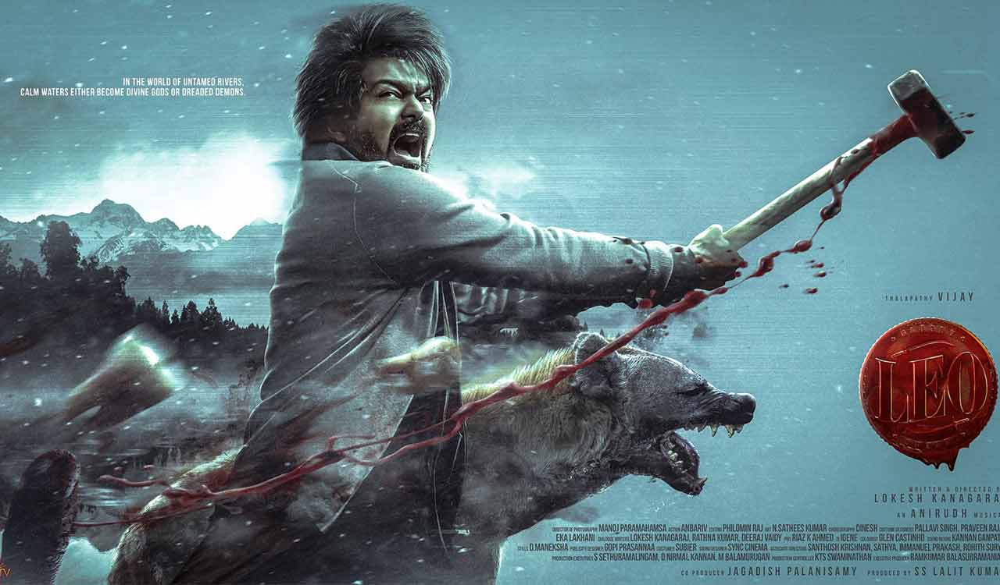

The Plot: Parthiban is a mild-mannered café owner and animal rescuer living peacefully in Himachal Pradesh with his family. His life turns upside down after he fends off a brutal gang in self-defense. His face hits the media, drawing the attention of a dangerous drug cartel led by Antony and Harold Das. They are convinced Parthiban is actually Leo Das, Antony's long-lost son and a former ruthless gangster.
Core Content Themes: Identity, family protection, redemption, and a classic "man with a hidden past" trope loosely inspired by the graphic novel adaptation A History of Violence.


The blockbuster action film Leo, starring Thalapathy Vijay and directed by Lokesh Kanagaraj, was filmed across several breathtaking and highly secured locations in India to establish its moody, high-stakes aesthetic.
You can book tickets for Leo (2023) or any current Thalapathy Vijay release quickly via leading online ticketing platforms. Streamline your movie plans by reserving seats directly through the BookMyShow or TicketNew portals.
For a smooth booking and viewing experience, keep the following tips and steps in mind:
To reach out regarding the 2023 Tamil film Leo (starring Thalapathy Vijay and directed by Lokesh Kanagaraj), you should contact its official production and distribution company, Seven Screen Studio, located in Chennai.
Address: #No.37/4, Potters St, Periyapet, Saidapet, Chennai, Tamil Nadu 600015
Business Enquiries: info7screenstudio@gmail.com
Script / Casting: scripts.7screen@gmail.com